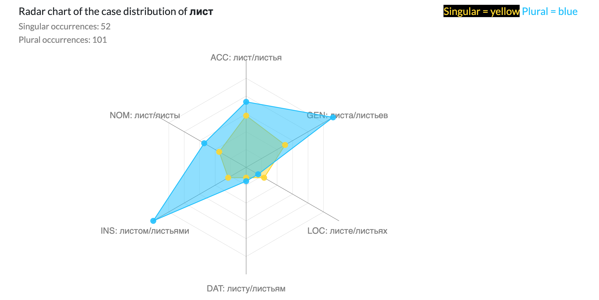
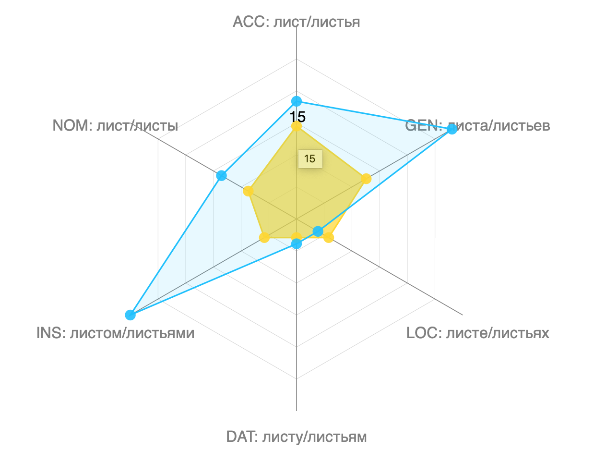

Radar Charts
In my research, I have been experimenting with building radar charts, also called spider charts or web charts, to present linguistic information. These are a two-dimensional chart type designed to plot one or more series of values over multiple quantitative variables. Each variable has its own axis, all axes are joined in the center of the figure. These types of charts are sometimes criticized for being difficult or misleading to interpret because of its circular layout, often random category ordering, and portrayal of point information as area. However, I have found that they are an effective graph for showing linguistic information that is based on relative frequency of categorical information.
I have experimented with building radar charts for showing the distribution of the 6 Russian cases (nominative, accusative, locative, instrumental, dative, genitive) across nouns in the abridged Russian National Corpus, a large collection of real Russian texts. The charts show how often a word will occur in different cases. For example, the word karandash (карандаш), pencil, should intuitively occur most frequently in the instrumental case karandashom (карандашом), meaning "with a pencil." I have also built radar charts summarizing the frequency of different verb forms for some verb infinitive. Of course, different verb forms do not all occur in equal frequency across the intersections of feminine, masculine, and neuter and past, present, and future.
Understanding the case breakdown or verb form distribution of words can help language learners master the most critical word forms. This is more critical to Russian than English, for example, because Russian encodes so much information in word form, and subsequently, there is a great abundance of forms for every word. For example, some verbs boast upwards of 60 forms for one infinitive! For example, 40+ forms of the verb begat' (бегать), meaning "to run", can be found here.
You can try the live Case Distribution tool on the Visualizing Russian website or my prototype of the Verb Distribution tool here.
Demo of the case distribution tool on list (лист) meaning "leaf" in Russian. The dots indicate the frequency with which the singular or plural form of the word occurs in each case category. The graph shows that the word list more frequently shows up in plural than singular, and especially in the instrumental case (with leaves) and the genitive case (of leaves):
Below: Count from the abridged Russian National Corpus shown on hover:
Below: Demo of the verb distribution tool on the verb chitat' (читать), meaning "to read." The graph shows both the imperfective and perfective forms of the verb. (Roughly, imperfective is used when the action is incomplete, while perfective is used when the action is complete.) The aspect gauge in the bottom left shows that "to read" more frequently occurs in the imperfective aspect than the perfective aspect, implying that people more often refer to the "process" of reading rather than the "completion" of reading.

Below: Chart showing the verb form breakdown in more detail. In the texts in the corpus, the verb seems to show up most frequently in its imperfective infinitive form ("to read") and imperfective past masculine form ("he read"). In the present tense, chitat' is most frequently found in its first person singular ("I read") and third person singular ("we read") forms.